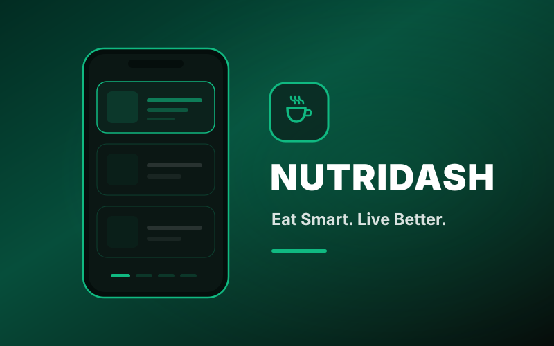
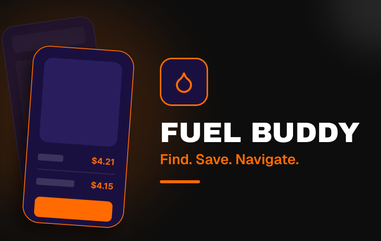
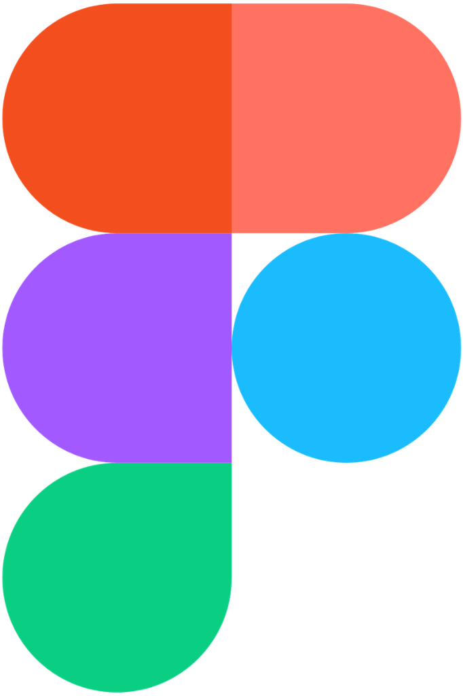
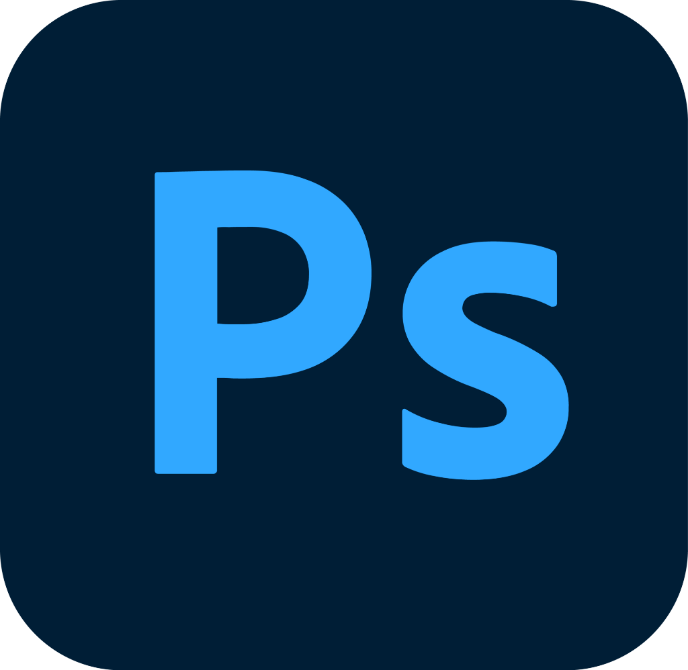
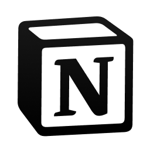
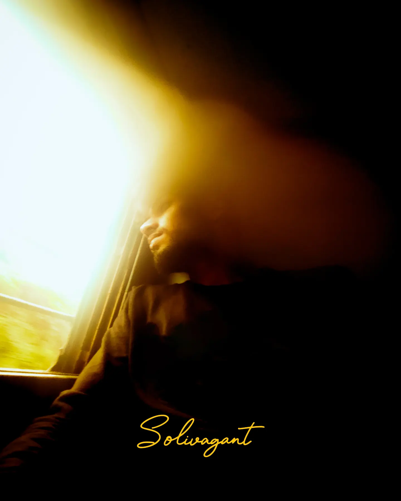
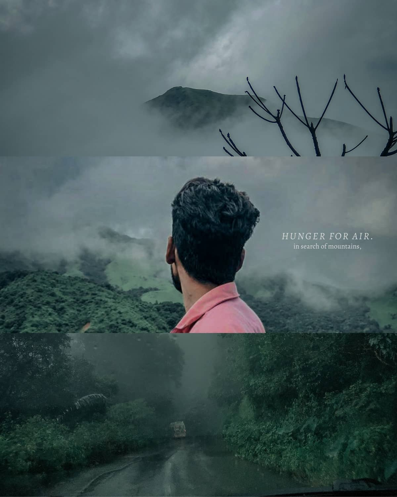

+ Project 01
NutriDash
People order food they can't see the contents of. NutriDash puts the ingredients back in front of the person eating them, without turning dinner into a spreadsheet.
View case study ↗
Open to full-time roles
I turn complex enterprise tools into things people actually use
Four years inside the software nobody puts on a portfolio: the intranets, the dashboards, the forms people open every single morning.

Most enterprise software isn't badly designed. It's undesigned.
It gets built feature by feature until nobody remembers what it was for.
I've spent four years at SharePoint Designs fixing exactly that, across fifty-plus intranet portals. The fix is rarely a new feature. It's a clearer sentence, a shorter path, and a screen that admits what it's actually for.
Three problems, told properly: the research, the wrong turns, and the decisions I'd defend.
People order food they can't see the contents of. NutriDash puts the ingredients back in front of the person eating them, without turning dinner into a spreadsheet.
View case study ↗
Fuel prices change daily and nobody knows where the cheap pump is until they've driven past it. A small app for a decision people make weekly and think about for ten seconds.
View case study ↗
The closest to my day job: thousands of documents, no shared vocabulary for finding them. An AI layer is only useful here if it earns trust faster than the search bar it replaces.
View case study ↗Not a methodology I read about. Just the order that stops me designing the wrong thing beautifully.
Talk to the people who have to live in the thing. Stakeholders describe the system they wanted; users describe the one they got.
Write the problem in one sentence everyone can agree on. If it takes a paragraph, we don't understand it yet.
Flows before screens, systems before pixels. Components a developer can reuse without asking me what the spacing was.
Stay through the build. The handoff isn't a file. It's the fifty small answers that come after it.
Designed and delivered over 50 intranet portals with a focus on usability, accessibility and engagement, working alongside developers, product managers and stakeholders to keep the design intact from the first workshop to the last build.

Figma
Photoshop
NotionNotes from the work: mostly on branding intranets, and the small details that decide whether people trust an interface.
Apply your primary colours to the site theme, get the logo into the header, and pick one font pairing you can hold across every page.
read it → May 2024 · 5 minSmall, delightful moments shape how people feel about a product far more than the feature list does. Seven ways to earn them.
read it → Dec 2023 · 6 minA CTA isn't decoration. It's the moment the interface asks for something, and where most products lose their nerve.
read it →I shoot street photography wherever I travel. Same instinct as the day job: watch what people actually do.


Hiring for something complex? Tell me what your team is trying to fix. I read every message.
Looking for a full-time product or enterprise design role, especially one with the messy, unglamorous problems in it.